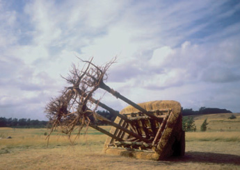

| ISSUE #2 |
|
-  Uprooted, 1994
Krakamarken, Denmark
For over two decades my primary work has been site- specific sculpture. This work is based on a complex web of information I gather through research, site visits, walking the landscape or urbanscape, discussion with community members and my own visual response to site and context. I am involved in the visual interpretation of a kind of deep mapping. My definition of site includes historical, cultural and political features, as well as the physical characteristics of a place. Many works are galvanized by consideration of the environmental plight of the site in question. I am interested in a relationship between the cultural and natural worlds that includes the earth, the body as a sensing being, language, and the artist’s potential to construct meaning through a process of participating with and within these systems. My work has to do with making in relation to seeing and conversing with the world; with issues of perception, how and what we see, in relation to understanding the workings of the world. I explore how we experience place and person by amplifying and intensifying ordinary phenomena, things there for everyone to see, but so woven into the fabric of the everyday that they are not usually noticed. I create places for contemplation, human gatherings, listening and observing—places that invite us to slow down and increase our sensory perception. My work is energized by questions like: what characterizes our past, present and future relationships with the spaces where we live and work and with our fellow humans, what will be the quality of our future relationships with place and diverse peoples? In work based on memory, perception, observation and experience with the world I attempt to forge meaningful sculptural sites as places into which other fields of learning may flow, where barriers may be broken and connections made. My interest is in melding physical materials with other human concerns such as the spiritual, the psychological, the sensual and the intellectual. I have had a continuing involvement in making work that undergoes, or alludes to, physical change as an echo of the constant flux of the world and its processes; that relates to human memory, history and action; and is informed by a cultural and political consciousness. I would like to be a generative force in a complex conversation about the world. The dialogue often begins with my own feet walking, my own muscles working, my eyes seeing, my lungs breathing and my hands making—myself as a sensing, creating body. In making work, I meld forms and materials with memory; process with product; accident with intentionality; playfulness with seriousness. I seek to construct my work through intense and meaningful processes in much the same manner as we are all laboring to form our lives into sites of significance and value. Paul Valéry notes that “When nature wishes to turn out a hard article of set shape, a support, a lever, a brace, an armor plate; or when it aims to produce a tree trunk, a femur, a tooth or a tusk, a skull or a sea shell, it works in the same indirect way: it takes the liquids or fluids from which all organic matter is made, and slowly separates out the solid substances it needs.” My process, too, is to slowly separate out the things I need to form my work within the multi-layered context of the world. |
This is an excerpt of the full article. To view complete text, please subscribe . You may also purchase a back issue |
Lake - Journal of Arts and Environment
Faculty of Creative and Critical Studies at the University of British Columbia Okanagan |
| web design by Idea Bureau |